Política de privacidad de Rigquiro
Fecha: 2 de octubre de 2026
1. Quién es responsable de tus datos
RIGQUIROPRACTICO SPA, RUT 76.691.821-2, domicilio en Diego Portales 468, Copiapó, Región de Atacama. Correo para consultas y derechos: rig@rigquiropractico.cl.
2. Qué datos guardamos
- Nombre de perfil.
- La credencial pública de tu passkey (clave de acceso).
- Tus rutinas, los ejercicios que realizas, series, repeticiones, pesos y fechas.
- Tu peso corporal, solo si tú lo anotas.
- Los ajustes de la app.
- Un registro técnico de los inicios de sesión.
- Notificaciones push: solo si tú las activas.
Estos datos de entrenamiento y rehabilitación se relacionan con tu salud. La ley los considera datos sensibles, por eso te pedimos tu consentimiento expreso.
3. Cómo entras: sin contraseñas ni huellas guardadas
Entras solo con un código de invitación que te entrega la consulta. Después usas tu passkey (Face ID o huella del teléfono). La app no guarda contraseñas ni tu huella o rostro: eso nunca sale de tu teléfono.
4. Para qué los usamos
Solo para que la app funcione y para que tu profesional tratante pueda acompañar tu tratamiento. Roberto Ibacache, tu profesional tratante, puede ver tu historial de entrenamiento en el panel de la app. No vendemos tus datos, no los compartimos con terceros, no los usamos para publicidad ni para entrenar inteligencia artificial.
5. Dónde y cuánto tiempo
Los datos están en un servidor propio de Oracle Cloud, región Chile (Santiago). Hacemos respaldos diarios, con acceso restringido, que se conservan 30 días. Mantenemos tus datos mientras uses la app o hasta que pidas borrarlos.
6. Tus derechos
Puedes pedirnos acceso a tus datos, que los rectifiquemos, que los eliminemos (supresión), que dejemos de tratarlos (oposición) y, desde que rija la Ley 21.719, su portabilidad (recibir una copia en formato electrónico). Escribe a rig@rigquiropractico.cl. Responderemos dentro de 30 días corridos y sin costo. Para borrar tu cuenta y tus datos, basta pedirlo por correo. Los datos guardados en tu teléfono puedes borrarlos tú mismo desde la app.
Puedes retirar tu consentimiento cuando quieras; no afecta lo ya hecho. Si dejas de usar la app, tu atención en la consulta no cambia.
7. Marco legal
Tratamos tus datos conforme a la Ley 19.628 sobre protección de la vida privada. El 1 de diciembre de 2026 entra en vigencia la Ley 21.719, que refuerza estos derechos y crea la Agencia de Protección de Datos Personales; ajustaremos esta política cuando corresponda.
8. Importante sobre la rehabilitación
La sección de rehabilitación es orientativa. No reemplaza la atención kinésica ni quiropráctica. Ante dolor fuerte o dudas, consulta a tu profesional.
9. Cambios
Si cambiamos esta política, te avisaremos en la app.